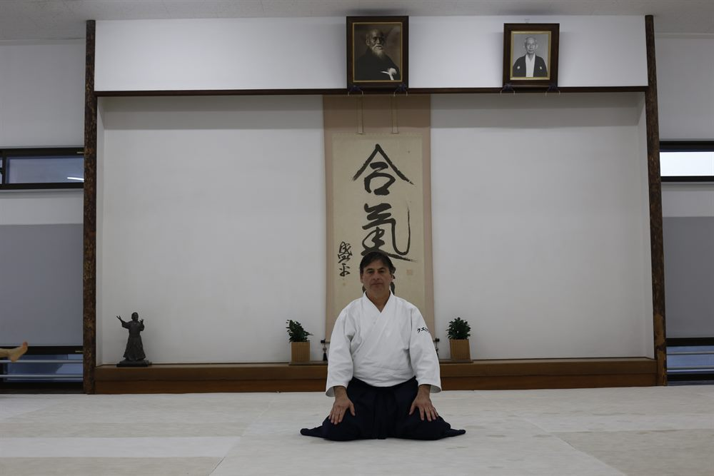
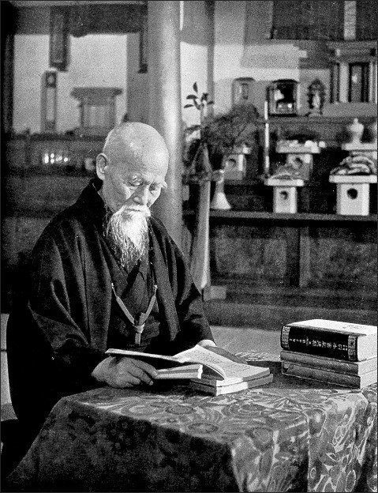

銀杏の木
Dojo de Aikido — Arte marcial japonés
Buenos Aires · Instructor Walter Cuestas
Ofrecemos clases para mayores de 16 años, desde principiantes hasta practicantes avanzados.
Cultivamos el cuerpo y la mente, enfocándonos en el control de las técnicas y el cuidado del compañero.
Primera clase gratuita para que conozcas el dojo, el grupo y la práctica sin ningún compromiso.
4to dan · Alumno de Katsutoshi Kurata Shihan

Walter Cuestas comenzó su camino en las artes marciales en el año 1981 con 14 años, practicando Karate okinawense estilo Shorin Ryu durante diez años. En el año 1990, conoce a Katsutoshi Kurata Shihan y comienza a practicar Aikido. En el año 1994 se forma como discípulo de Ricardo Dratman, alumno destacado de Kurata Sensei, quien había estudiado en Japón con Yamaguchi sensei, Kuroiwa sensei y Saito sensei, entre otros grandes maestros. En el año 2010 funda su propio Dojo, donde sigue dando clases hasta día de hoy, buscando transmitir el Aikido y el espíritu del Budo japonés.
Transmite la idea de armonía, de comunicación, de confluencia. Puede verse como una tapa ajustada a un recipiente.
Refiere al poder, la vibración, la esencia de la vida y el espíritu. El flujo invisible que conecta mente y cuerpo.
Por lo tanto, Aiki significa hacerse uno con la energía del universo.
Presente al final de muchas artes marciales japonesas. No solo importan las técnicas o los resultados, sino el camino que transitamos, camino que nos regala una mejor forma de vida.
El fundamento del aikidō, como arte marcial, es el desarrollo del autocontrol para lograr armonizarse con el opuesto por medio de la regulación del espacio, el tiempo y la energía, independientemente de la masa, del género, de la edad o de la fuerza física de los practicantes y oponentes. Lo cual se puede sintetizar en la búsqueda del Shikaku (Punto vacío), por medio de kuzushi (desequilibrios) y de Tai sabaki (esquiva).
Nacido en 1883, se dedicó desde temprana edad a la educación tanto espiritual; mostrando gran interés por la meditación, las ceremonias y las plegarias; como marcial, estudiando Ju Jitsu (combate a manos libres) y Ken Jutsu (sable). Participó en la guerra ruso-japonesa a la edad de 20 años, donde ganó fama entre sus compañeros por su destacado valor, recibiendo el sobrenombre de "soldado kami".
Tiempo después, lideró y trabajó incansablemente en el cultivo de la tierra en terrenos inhabitados. Terminada esta tarea, continuó en su búsqueda del Budo a través del estudio de la Daito Ryu (escuela de Ju Jutsu) y siguiendo a maestros de la espiritualidad.
Finalmente, fundó su propia escuela, la "Escuela Ueshiba", donde comenzó a forjar su teoría sobre la unificación del espíritu, la mente y el cuerpo. En 1923, nombró a su arte "Aiki Bujutsu". Continuó desarrollando su filosofía en viajes destinados a la paz, donde se vio acechado por numerosas amenazas como bandidos y soldados, oportunidad en la que demostró un dominio espiritual y una habilidad física casi sobrehumana en los conflictos. Con ayuda de numerosos simpatizantes, en 1930, fundó su dojo en el barrio de Shinjuku, Tokyo, que fue tenido en altísima estima (incluso entrenando a fuerzas policiales y funcionarios de la Corte Imperial) y sigue en funcionamiento a día de hoy.
En 1942, en plena escalada militar del entonces Imperio Japonés en la Segunda Guerra Mundial, se posicionó como un férreo opositor a la violencia y a la expansión militar: "La armonía, el amor y la cortesía son los elementos esenciales del verdadero Budo, pero los que detentan el poder hoy en día no piensan sino en jugar con las armas. Creen equivocadamente que el Budo es un instrumento de violencia y destrucción...". Por esto, se retiró a la ciudad de Iwama, donde se dedicó a la agricultura y construyó un dojo al aire libre y un santuario de Aiki que le serviría como un lugar de retiro espiritual.
Terminada la guerra continuó llevando la vida autosuficiente de un granjero y poniendo en práctica su idea de la unidad esencial entre el Budo y la agricultura, buscando perfeccionar el ideal del Takemusu Aiki, estando profundamente convencido de que la tarea de un samurái auténtico era construir un mundo de paz y proteger toda forma de vida.
En el año 1969, se apagó la vida del gran maestro, que vivió bajo sus ideales como un auténtico samurái hasta el último de sus días, simbolizando la unión con las fuerzas cósmicas que constituye el ideal de las artes marciales, y trabajando por el bien de la humanidad y del mundo, dejándonos como legado un camino, una filosofía de la acción.

"El Budo no consiste en derrotar al adversario por medio de nuestra fuerza. Tampoco es una herramienta para provocar la destrucción del mundo. El verdadero Budo consiste en aceptar el espíritu del Universo, salvaguardar la paz en el mundo, proteger y favorecer el crecimiento de todos los seres."
— Morihei Ueshiba
Momentos del tatami. Tocá una foto para verla en grande.
銀杏の木 (Ichō no Ki) significa "árbol de Ginkgo" en japonés. El Ginkgo es la especie arbórea más antigua del planeta, tanto que se lo considera un "fósil viviente"; coexistió con los dinosaurios y sobrevivió a múltiples eventos catastróficos, como extinciones masivas y cambios climáticos. Incluso, relata la historia, sobrevivió a la bomba atómica detonada sobre Hiroshima, donde increíblemente, semanas luego de la destrucción de la ciudad, árboles de Ginkgo rebrotaron cerca del epicentro de la explosión, convirtiéndose así en un símbolo de resiliencia, de perseverancia y de esperanza. Hoy día, es el árbol oficial de Tokyo, y comúnmente se lo conoce como "Árbol de la Vida".
¿Tenés ganas de practicar Aikido? ¡Escribinos!
Ubicación
Scalabrini Ortiz 1147 — Palermo
Ciudad Autónoma de Buenos Aires